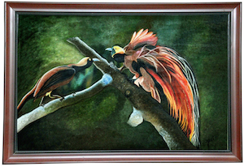
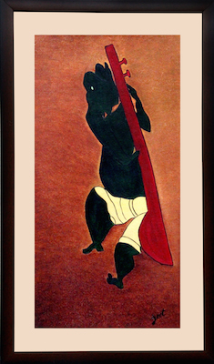
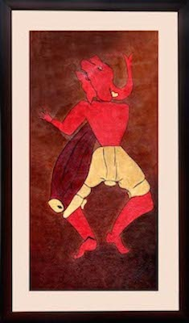
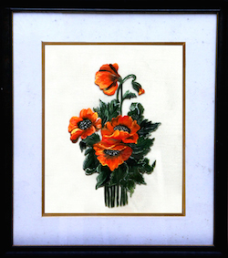
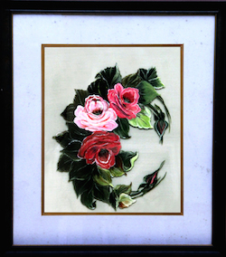
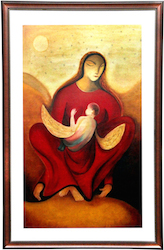
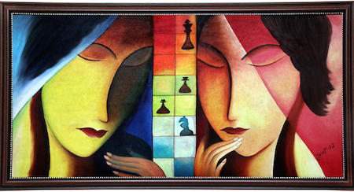
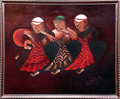
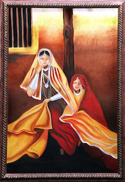
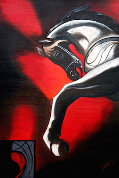

This a 2 ft x 4 ft oil portrait of Buddha depicting him in a state of
meditation and tranquillity.

This 2.5 ft x 3.5 ft oil on canvas painting. It portrays the
coexistence between various living beings. Although the two birds are
so vastly different in appearance, both survive in the same habitat.
It is a depiction of the harmony in diversity.

These are three 1 ft x 2 ft oil on canvas paintings.It depicts the Hindu deity Lord Ganesha who is a patron of art and
science and believed to be the deva of intellect and wisdom.

These are three 1 ft x 2 ft oil on canvas paintings.It depicts the Hindu deity Lord Ganesha who is a patron of art and
science and believed to be the deva of intellect and wisdom.

These are three 1 ft x 2 ft oil on canvas paintings.It depicts the Hindu deity Lord Ganesha who is a patron of art and
science and believed to be the deva of intellect and wisdom.

This is a floral paintings done on glass.

This is a floral paintings done on glass.
This is a 2 ft x 3 ft oil painting. Traditionally, Bindis are used on
the forehead between the eyebrows. This area is believed to be the
seat of concealed wisodom. The painting attempts to convey this
ancient symbolism and depict the strength and a power of a woman.

It is a 2 ft x 3 ft oil painting which seeks to convey
the unconditional love that a mother has for her child. The portrait
depicts a a child completely embraced by his mother which is a symbol
for the unwavering need of a mother to protect her child against all
odds.

This is a 2 ft x 4 ft oil medium painting depicting two individuals at
a game of chess. It seeks to convey that Life is simply a game of
chess. It changes with every move, requires sacrifices and careful
planning. We can never be sure of the outcome of our decisions. All we
can do is play to our strengths and come out fighting.

It is 3 ft by 3.5 ft oil on canvas
It is a depiction of three men looking at the sunrise which is a
symbol of a new day.
It symbolizes a new beginning, a new chapter in their lives and the
hope that accompanies it.

It is a 2 ft x 3 ft oil on canvas.
It is a portrayal of the bond between siblings. Although it is a
tumultuous relationship, it is an unbreakable and irreplaceable one.

TThis a 2 ft x 3 ft oil on canvas
It is a depiction of the trials and tribulations that accompany a win.
This is a 2 ft x 3 ft oil on canvas
This painting depicts a human life partly entangled in the shadows of the past.